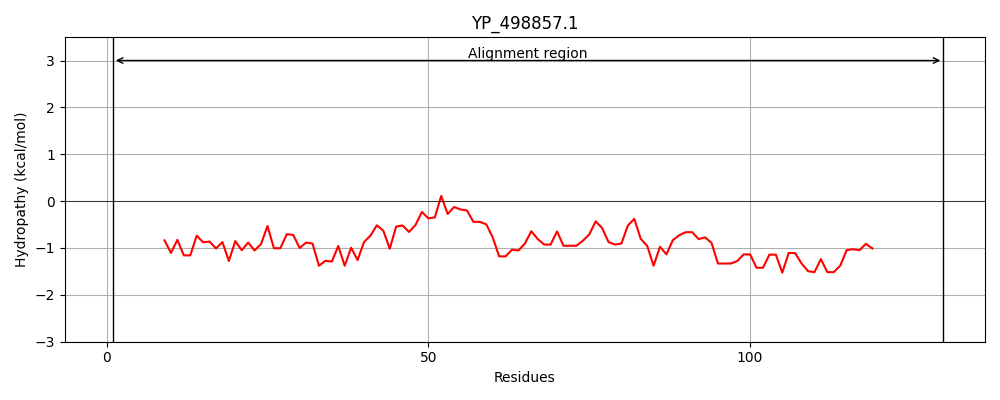
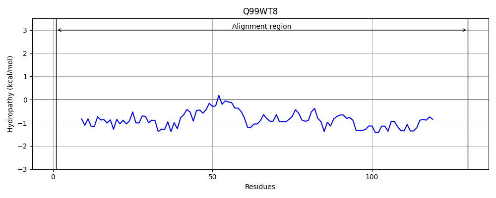
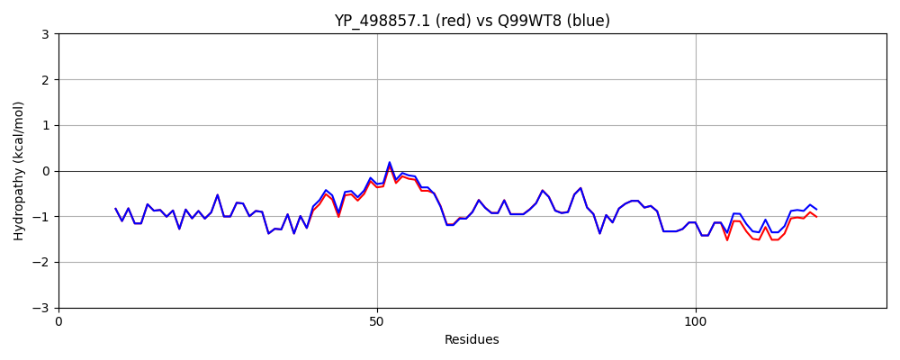

Hit Accession: Q99WT8
Hit TCID: 3.A.7.17.1
Hit Description: gnl|BL_ORD_ID|17683 gnl|TC-DB|Q99WT8|3.A.7.17.1 Protein esaC - Staphylococcus aureus (strain Mu50 / ATCC 700699).
Mach Len: 130
e:0.000000
Query TMS Count : 0
Hit TMS Count: 0
TMS-Overlap Score: 0.000000
Predicted Substrates:CHEBI:36080;protein, CHEBI:36080;protein
BLAST Alignment:
| Protein Hydropathy Plots: | |
|---|---|
|  |  |
Pairwise Alignment-Hydropathy Plot: | |
|  | |